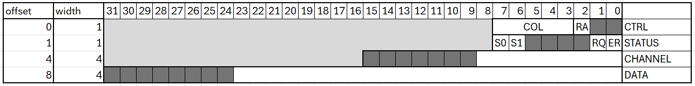
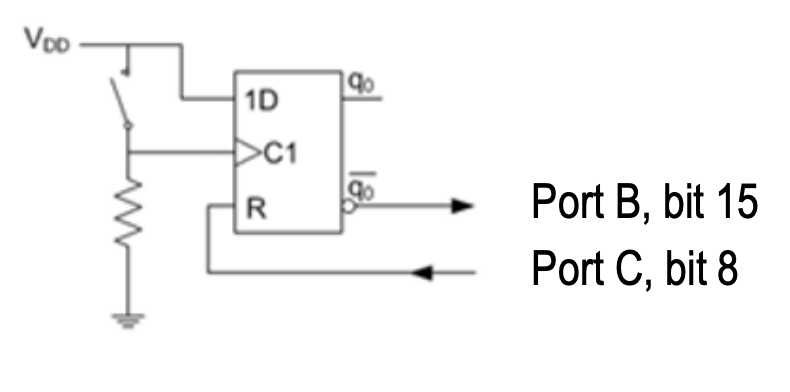
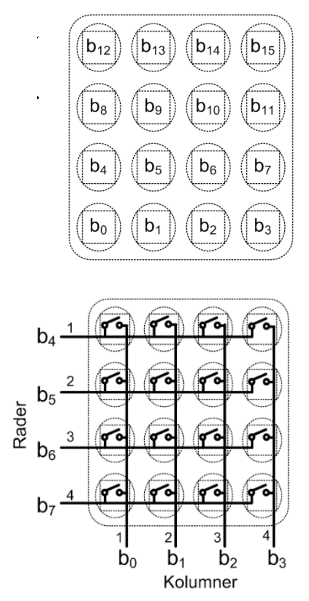
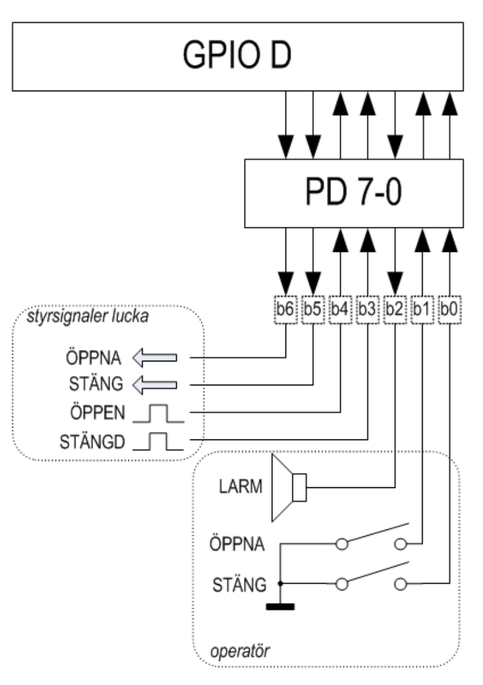

Kurs: Maskinorienterad programmering — Tentamen 31
maj 2024
Målplattform: CH32V307 (RISC‑V, QingKe
V4F)
En C-funktion convert är definierad enligt listning
nedan.
Ange det alternativ (A–H) som visar en korrekt implementering (dvs. fungerande kod) i RISC‑V RV32 assemblerspråk.
int convert( signed char *cp )
{
int converted = 0;
while( *cp )
{
if( *cp<0 )
{
*cp = -(*cp);
converted++;
}
cp++;
}
return converted;
}| A | B | C | D |
|
|
|
|
| E | F | G | H |
|
|
|
|
Svar: F
@ a0: cp
@ t0: converted
convert:
li t0, 0 @ converted = 0
L1:
lb t1, 0(a0) @ t1 = *cp
beq t1, zero, L3 @ *cp == 0 → klar
bge t1, zero, L2 @ *cp >= 0 → skippa negering
neg t1, t1 @ t1 = -(*cp)
sb t1, 0(a0) @ *cp = -(*cp)
addi t0, t0, 1 @ converted++
L2:
addi a0, a0, 1 @ cp++
j L1
L3:
mv a0, t0 @ returvärde
retbge t1, x0, L1 hoppar förbi negering
korrekt, men addi a0, a0, 1 exekveras innan L1
— cp inkrementeras utan att negera → fel hopplogik.lw/sw på en
signed char * → laddar/sparar 4 byte istället för 1.blt t1, x0, L1 hoppar till
L1 (utan negering) när *cp < 0 → nekar
negering för negativa värden.lw/sw och fel
grenriktning.call loop istället för
j loop → förstör ra i loopen.blt t1, x0, L1 inleder
negerings-blocket när *cp < 0, j loop är
ovillkorligt hopp tillbaka.lw/sw och
call loop.lw/sw.C-funktionen bitcheck undersöker en parameter med
avseende på antalet 1-ställda bitar.
Funktionen deklareras:
int bitcheck( unsigned int *pp, int * num );
pp är en pekare till det värde som ska undersökasnum är en pekare till en plats för returvärde, dvs.
antalet 1-ställda bitar hos parameternFunktionen returnerar 1 om antalet ettor hos parametern är udda, annars ska funktionsvärdet vara 0.
Sex olika programmerare får i uppgift att implementera funktionen. Resultaten blir likartade men bara en programmerare presterar ett helt korrekt resultat. Ange alternativet med den korrekta lösningen.
| A | B | C |
|
|
|
| D | E | F |
|
|
|
Svar: C
while(*pp) derefererar pekaren och loopar över bitarna
i det faktiska värdet ✓if(*pp & 1) testar lägsta biten i värdet ✓*pp >>= 1 skiftar värdet via pekare ✓*num = retval skriver antalet ettor till den adress
num pekar på ✓return retval & 1 returnerar 1 om antalet ettor är
udda ✓Alternativ A/D/E: opererar på pekarvärdet pp direkt
(adressaritmetik) istället för *pp.
Alternativ B: num = retval tilldelar lokal kopia av pekaren
— skriver aldrig till destinationen.
Alternativ F: använder sizeof(int) (= 4) som increment
istället för 1 → räknar bitar med fel vikt.
Följande deklarationer är givna på “toppnivå”.
static unsigned char f,c;
int foo2(unsigned char);
short foo1(unsigned char,int);Följande funktion skall implementeras:
short func() {
unsigned short x = foo2(f);
short a = foo1(c, x) + x;
return a;
}Vilken av följande implementeringar i RISC‑V-assembly-kod är korrekt?
| A | B | C |
|
|
|
| D | E | F |
|
|
|
Svar: E
func anropar foo2 och foo1, så
ra måste sparas. Returvärdet från foo2 (=
x) behöver överleva anropet till foo1 — det
kräver ett callee-saved register (s-register).
ra → ret
hoppar fel efter call foo1.ra men sparar
foo2-resultatet i a1 — a1 är
caller-saved och skrivs över av call foo1 → fel.s0 för
foo2-resultatet men sparar inte s0 på stacken
→ förstör anroparens s0.addi sp, sp, -4 allokerar 4 byte
men sw ra, 4(sp) skriver 4 byte utanför det allokerade
utrymmet → stackkorruption.ra och s0 på
stacken, håller foo2-resultatet i s0 över
call foo1, återställer korrekt →
korrekt.foo2-resultatet i
t0 — t0 är caller-saved och skrivs över av
call foo1 → fel.Följande port som utgör ett gränssnitt mot en yttre periferienhet är
placerad på adress 0xFF600000.

a) Visa lämpliga makrodefinitioner för referens (åtkomst) av portens olika register. (2 p)
#define CTRL ((volatile unsigned char *)0xFF600000)
#define STATUS ((volatile unsigned char *)0xFF600001)
#define CHANNEL ((volatile unsigned int *)0xFF600004)
#define DATA ((volatile unsigned int *)0xFF600008)b) Visa med en typdefinition PORT, hur
porten kan avbildas med en struct-definition. (2 p)
Visa speciellt hur delen DATA då refereras med hjälp av din
typdefinition. (2 p)
typedef struct {
unsigned char CTRL;
unsigned char STATUS;
short unused0;
unsigned short CHANNEL;
unsigned short unused1;
unsigned int DATA;
} PORT;
/* Referens till DATA */
((PORT*)0xFF600000)->DATA;c) Visa hur portens första register (offset=0) kan avbildas med en bitfältsdeklaration där de olika bitarna kan refereras var för sig. (4 p)
CTRL är 1 byte (offset 0, width 1). Från registerfiguren, bits 7–0:
| Bitar | Namn | Bredd |
|---|---|---|
| 7–3 | COL | 5 |
| 2 | RA | 1 |
| 1–0 | — | 2 |
typedef struct {
unsigned char :2; /* bits 3:0 reserverade */
unsigned char RA :1; /* bit 4 */
unsigned char COL :5; /* bits 7:5 */
} REG0;unsigned char används eftersom registret är 8 bitar
brett — unsigned int skulle ge 4-byte-åtkomst och täcka
även STATUS, CHANNEL-padding etc.
Man vill implementera en klocka med hjälp av TIMER7.
Antag att en avbrottsfunktion
void timer7_interrupt(void) är definierad.
Visa med en funktion void timer7_init(void) hur TIMER7
konfigureras för avbrottssystemet (PFIC på CH32V307)
och startar periodiska avbrott med 100 us
intervall.
Följande makrodefinitioner kan förutsättas givna som pekare till
respektive register: PFIC_IENR1..PFIC_IENR4,
TIM7_PSC, TIM7_ATRLR,
TIM7_DMAINTENR, TIM7_CTLR1.
TIM7 har IRQ-nummer 71. Enligt QuickGuide: bit
x i IENRn motsvarar interrupt
32 * (n-1) + x.
71 = 32×2 + 7 → IENR3, bit 7.
Relevanta bitar (QuickGuide): - CTLR1.CEN (bit 0):
Counter enable - DMAINTENR.UIE (bit 0): Update interrupt
enable - PSC: 16-bitars prescaler (max 65535) -
ATRLR: 16-bitars auto-reload
Vektortabellen hanteras av länkskriptet/startupkoden —
timer7_interrupt länkas in automatiskt.
void timer7_init(void)
{
/* Konfigurera periodtid: TIM7-klocka = 144 MHz
* 100 µs = 144 MHz × 100×10⁻⁶ = 14 400 cykler
* PSC = 0 (ingen prescaling), ATRLR = 14400 - 1
* (14399 < 65535, ryms i 16 bitar)
*/
*TIM7_PSC = 0;
*TIM7_ATRLR = 14400 - 1;
/* Aktivera update interrupt (UIE, bit 0) i DMAINTENR */
*TIM7_DMAINTENR |= (1 << 0);
/* Aktivera TIM7 i PFIC: IRQ 71 = 32*2+7 → IENR2, bit 7 */
*PFIC_IENR3 |= (1 << 7);
/* Starta timern (CEN, bit 0) */
*TIM7_CTLR1 |= (1 << 0);
}En avbrottsvippa kopplas till ett CH32V307-baserat labbkort enligt figur.

Vi påminner om vippans funktion: - Då nivån på C1
ändras till 1 (positiv flank) ändras vippans interna tillstånd
q0 till värdet på ingången 1D, förutsatt att
R är 0. - Då R har värdet 1, tvingas
q0 till 0.
Den externa avbrottsmekanismen (EXTI) ska användas för att detektera knapptryckningar. Ingen hänsyn behöver tas till eventuella kontaktstudsar. Notera att det är inversen av q0 som är kopplat till Port B.
Avbrott ska ske på negativ flank.
Du kan anta att interrupt_handler redan är korrekt installerad och vekortabellen initierad.
Förutsätt att makrodefinitioner för pekare till använda register finns givna med namnkonventioner enligt QuickGuide.
Visa med en funktion app_init hur avbrottsmekanismerna
initieras, dvs. AFIO, EXTI,
GPIO och PFIC initieras. Tänk på att
bara de pinnar som berörs får ändras vid konfigureringen.
#define PFIC_EXTI15_10_IENR2_BIT (1 << 24) /* EXTI15_10 = IRQ 56 = 32×1+24, i PFIC IENR1 */
#define EXTI15_BIT (1 << 15)
void app_init(void)
{
/* Port C, bit 8 utgång (push-pull, 10 MHz): MODE=01, CNF=00 → nibble 0x1 */
*GPIOC_CFGHR &= ~0x0000000F;
*GPIOC_CFGHR |= 0x00000001;
/* Port B, bit 15 ingång (floating): MODE=00, CNF=01 → nibble 0x4 */
*GPIOB_CFGHR &= ~0xF0000000;
*GPIOB_CFGHR |= 0x40000000;
/* PB15 → EXTI15 (AFIO_EXTICR4, fält EXTI15 = bits[15:12] = 0x1 för Port B) */
*AFIO_EXTICR4 &= ~0x0000F000;
*AFIO_EXTICR4 |= 0x00001000;
/* EXTI: aktivera linje 15, negativ flank */
*EXTI_INTENR |= EXTI15_BIT;
*EXTI_FTENR |= EXTI15_BIT;
*EXTI_RTENR &= ~EXTI15_BIT;
/* Enable i PFIC */
*PFIC_IENR2 |= PFIC_EXTI15_10_IENR2_BIT;
}Under laborationerna har du arbetat med ett enkelt tangentbord där tangenterna organiserats i rader och kolumner. Man vill kunna detektera flera samtidigt nedtryckta tangenter och därför konstruera en tangentbordsrutin som returnerar ett statusord (16 bitar) där varje tangent har en bitposition och värdet 1 indikerar en nedtryckt tangent medan värdet 0 indikerar en uppsläppt tangent.
Antag att Port D, bit 0..7, kopplats till tangentbordet enligt figuren nedan.

Utgångarna ska därför vara open-drain. De avlästa kolumnerna ska vara pull-up.
Skapa en initieringsfunktion void init_app(void) som
konfigurerar Port D för användning med tangentbordet och en
tangentbordsrutin unsigned short keyb(void) som söker av
tangentbordet och placerar kolumnvärde för varje rad i en
unsigned short och returnerar denna.
Förutsätt att makrodefinitioner för pekare till använda register finns givna med namnkonventioner enligt QuickGuide.
void init_app(void)
{
/*
* PD0..PD3: ingångar (kolumner) med pull-up
* CNF=10, MODE=00 → nibble 0x8
* PD4..PD7: utgångar (rader) open-drain 10 MHz
* CNF=01, MODE=01 → nibble 0x5
* CFGLR = [PD7..PD4 = 0x5555, PD3..PD0 = 0x8888] = 0x55558888
*/
*GPIOD_CFGLR = 0x55558888;
/* Aktivera pull-up på kolumnerna (PD0..3) och håll raderna höga (inaktiva) */
*GPIOD_OUTDR |= 0x00FF;
}
unsigned short keyb(void)
{
unsigned short pad = 0;
/* Rad 4 (PD7): tangenter b3..b0 → bit 3..0 i returvärdet */
*GPIOD_BSHR = 0x00F0; /* alla rader höga (inaktiva) */
*GPIOD_BCR = (1 << 7); /* dra rad 4 (PD7) låg */
pad = (unsigned short)(*GPIOD_INDR & 0x000F);
/* Rad 3 (PD6): tangenter b7..b4 → bit 7..4 i returvärdet */
*GPIOD_BSHR = 0x00F0;
*GPIOD_BCR = (1 << 6);
pad |= (unsigned short)((*GPIOD_INDR & 0x000F) << 4);
/* Rad 2 (PD5): tangenter b11..b8 → bit 11..8 i returvärdet */
*GPIOD_BSHR = 0x00F0;
*GPIOD_BCR = (1 << 5);
pad |= (unsigned short)((*GPIOD_INDR & 0x000F) << 8);
/* Rad 1 (PD4): tangenter b15..b12 → bit 15..12 i returvärdet */
*GPIOD_BSHR = 0x00F0;
*GPIOD_BCR = (1 << 4);
pad |= (unsigned short)((*GPIOD_INDR & 0x000F) << 12);
/* Alla rader inaktiva igen */
*GPIOD_BSHR = 0x00F0;
/*
* Kolumnerna är aktiva låga (pull-up): 0 = tangent nedtryckt.
* Returvärdet ska ha 1 = nedtryckt, varför mönstret inverteras.
*/
return (unsigned short)(pad ^ 0xFFFF);
}En elektroniskt styrd ventilationslucka ska konstrueras. Luckan har ett 7-bitars digitalt gränssnitt (se figur nedan.)

Operatörsignaler: - En funktion för att ge larm via en högtalare aktiveras med en etta på bit 2. - Funktioner för att öppna och stänga luckan utgörs av två återfjädrande strömbrytare anslutna via b1 och b0. Då strömbrytarna är öppna är dessa ingångar flytande och måste därför förses med programmerad pull-up. - Om båda strömbrytarna aktiveras samtidigt ska larmsignal ges.
Signaler till/från ventilationslucka: - Indikatorer för helt öppen respektive helt stängd lucka är anslutna via b4 och b3. Signalerna är aktiva vid hög nivå. Om båda dessa signaler är 0 betyder det att luckan håller på att öppnas eller stängas. Om båda signaler är 1 innebär detta något fel och larmet ska då aktiveras. - Signalerna b6 och b5 aktiveras (sätts till 1) för att öppna respektive stänga luckan. Dessa signaler får inte aktiveras samtidigt. I mekaniken som reglerar luckan finns en viss tröghet så det kan ta maximalt 1 sekund att öppna och maximalt 2 sekunder att stänga luckan. Om det skulle ta längre tid ska larmsignal ges.
En blockerande fördröjningsfunktion
void delay_100ms(void) som fördröjer i 1/10 sekund finns
tillgänglig.
Förutsätt att makrodefinitioner för pekare till använda register finns givna med namnkonventioner enligt QuickGuide.
a) void init(void) — initiera GPIOD för
användning med luckan. Oanvända pinnar i porten ska ställas som
ingångar. (2 p)
void init(void)
{
/*
* PD0: input pull-up (STÄNG knapp) CNF=10, MODE=00 → nibble 0x8
* PD1: input pull-up (ÖPPNA knapp) CNF=10, MODE=00 → nibble 0x8
* PD2: output PP 10 MHz (LARM) CNF=00, MODE=01 → nibble 0x1
* PD3: input floating (STÄNGD ind.) CNF=01, MODE=00 → nibble 0x4
* PD4: input floating (ÖPPEN ind.) CNF=01, MODE=00 → nibble 0x4
* PD5: output PP 10 MHz (STÄNG lucka) CNF=00, MODE=01 → nibble 0x1
* PD6: output PP 10 MHz (ÖPPNA lucka) CNF=00, MODE=01 → nibble 0x1
* PD7: input floating (oanvänd) CNF=01, MODE=00 → nibble 0x4
*
* CFGLR = [b7..b0] = 0x4, 0x1, 0x1, 0x4, 0x4, 0x1, 0x8, 0x8 = 0x41144188
*/
*GPIOD_CFGLR = 0x41144188;
/* Pull-up på b0 och b1 via ODR */
*GPIOD_OUTDR |= 0x03;
/* Säkerställ att styrsignalerna b2, b5, b6 är inaktiva (låga) */
*GPIOD_BCR = (1 << 2) | (1 << 5) | (1 << 6);
}b) int open(void) — öppna luckan, vänta
maximalt 1 sekund i 100 ms intervall.
Om dörren öppnas inom 1 sekund ska funktionen returnera 1, annars ska
funktionen returnera 0. (3 p)
int open(void)
{
/* Inaktivera STÄNG (b5=0) och LARM (b2=0), aktivera ÖPPNA (b6=1) */
*GPIOD_BCR = (1 << 5) | (1 << 2);
*GPIOD_BSHR = (1 << 6);
for (int i = 0; i < 10; i++) /* 10 × 100 ms = 1 sekund */
{
delay_100ms();
if (*GPIOD_INDR & (1 << 4)) /* b4=1: lucka helt öppen */
{
*GPIOD_BCR = (1 << 6); /* Inaktivera ÖPPNA-signal */
return 1;
}
}
*GPIOD_BCR = (1 << 6); /* Inaktivera ÖPPNA-signal vid timeout */
return 0;
}c) int close(void) — stäng luckan,
vänta maximalt 2 sekunder i 100 ms intervall.
Om dörren är stängd inom 2 sekunder ska funktionen returnera 1, annars
ska funktionen returnera 0. (3 p)
int close(void)
{
/* Inaktivera ÖPPNA (b6=0) och LARM (b2=0), aktivera STÄNG (b5=1) */
*GPIOD_BCR = (1 << 6) | (1 << 2);
*GPIOD_BSHR = (1 << 5);
for (int i = 0; i < 20; i++) /* 20 × 100 ms = 2 sekunder */
{
delay_100ms();
if (*GPIOD_INDR & (1 << 3)) /* b3=1: lucka helt stängd */
{
*GPIOD_BCR = (1 << 5); /* Inaktivera STÄNG-signal */
return 1;
}
}
*GPIOD_BCR = (1 << 5); /* Inaktivera STÄNG-signal vid timeout */
return 0;
}